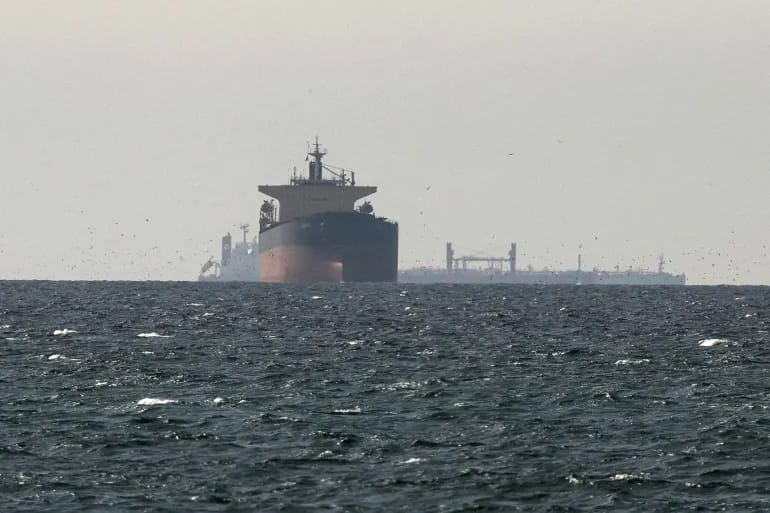
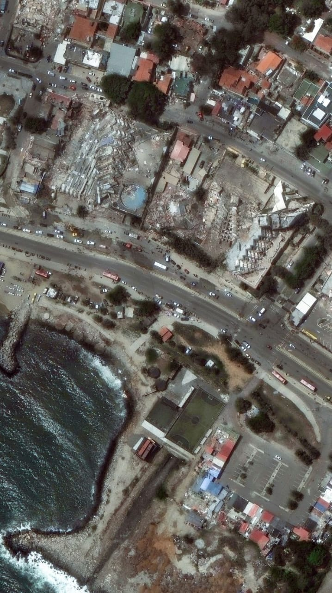

Wararka ugu waa wayn

Sawirrada dayax-gacmeedka ayaa muujinaya baaxadda burburka dhulgariirrada ee Venezuela
28 June 2026Faransiiska ayaa diwaan galiyey in ka badan 1,000 ruux oo u geeriyootay kul.
28 June 2026
Koobka adduunka knockouts: Ayaa usoo gubay wareega marxaladda 32-aad.
26 June 2026Ra'isul wasaaraha Ingiriiska oo is casilay kadib markii uu lumiyey kalsoonidii xisbigiisa.
22 June 2026.jpeg)
Midowga Yurub oo Soomaalida kusoo rogay xayiraad fiisaha ah
21 June 2026
Gabar Quraanka oo idil ku qortay gacanteeda oo leh farshaxan cajiib ah
22 June 2026.jpeg)